Skinfo - A UX Case Study
Timeline
- Nov-Dec 2024
Software
- Figma
My Role
- Designer
Award
- Best User Centered Design
- Best Strategic Design
Introduction
In today’s skincare market, people struggle to choose the right products and understand their skin’s unique needs. During Fall Quarter 2024, our design team tackled this challenge through an intensive 6-week design sprint.
Our goal was to create a platform that helps people overcome common skincare obstacles, including difficulty identifying skin conditions, navigating conflicting information, and making budget-friendly choices. Skinfo emerged as our solution to these widespread challenges.
Using a thorough design process that included in-depth user research, iterative prototyping, and comprehensive testing, we developed a platform that does more than just recommend products. Skinfo is a user-friendly tool that provides personalized guidance, empowering people to make confident decisions about their skin health.
Responsibilities
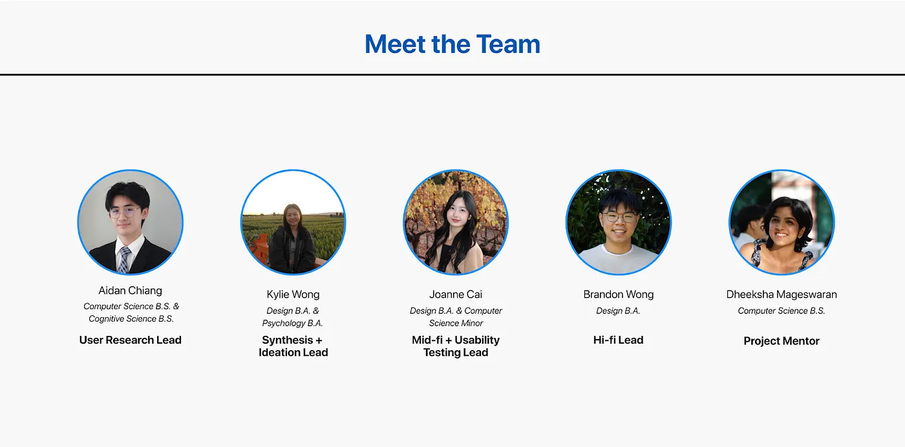Sprint Breakdown and Action Items During Each Sprint:
- User Research (Lead: Aidan Chiang)
- Conducted preliminary literature reviews to investigate existing skincare challenges and research
- Executed comprehensive user interviews and surveys to gather in-depth insights into user needs, pain points, and behavioral patterns
- Compiled and documented preliminary findings to inform subsequent design phases
- Synthesis and Ideation (Lead: Kylie Wong)
- Analyzed and synthesized user research data to extract critical pain points and key insights
- Created comprehensive affinity diagrams and user flows to visualize research findings
- Developed detailed user personas to represent target user segments
- Generated low-fidelity sketches for initial core feature concepts
- Mid-Fidelity Prototype and Usability Testing (Lead: Joanne Cai)
- Translated lo-fi sketches and user flows into mid-fidelity wireframes and interaction flows
- Designed a structured usability testing process
- Conducted iterative user testing sessions and A/B tests to receive design feedback
- Documented and prioritized user feedback for design refinement in the hi-fidelity prototype
- High-Fidelity Prototype (Lead: Brandon Wong)
- Developed comprehensive high-fidelity designs with meticulous attention to visual and interaction details
- Implemented design system consistency and brand alignment
- Refined prototype based on mid-fidelity usability testing insights
- Prepared final design deliverables for judge presentation
Research
Research Methods
Our team employed a mixed-methods research approach to comprehensively understand skincare information consumption and consumer challenges. We started the process with preliminary literature reviews to establish a foundational understanding of existing skincare research and common problems. This was followed by a targeted survey that received over 50 responses and additional in-depth user interviews with eight participants. We also conducted competitive analyses on other skincare websites, such as Onskin, Hwahae, Olive Young, and Ulta Beauty.
Primary Research Objectives
Our core research goal centered on developing a solution that could effectively counteract social media misinformation, provide reliable and accessible skincare information, and support users in making informed, confident skincare decisions.
Key Research Data and Findings
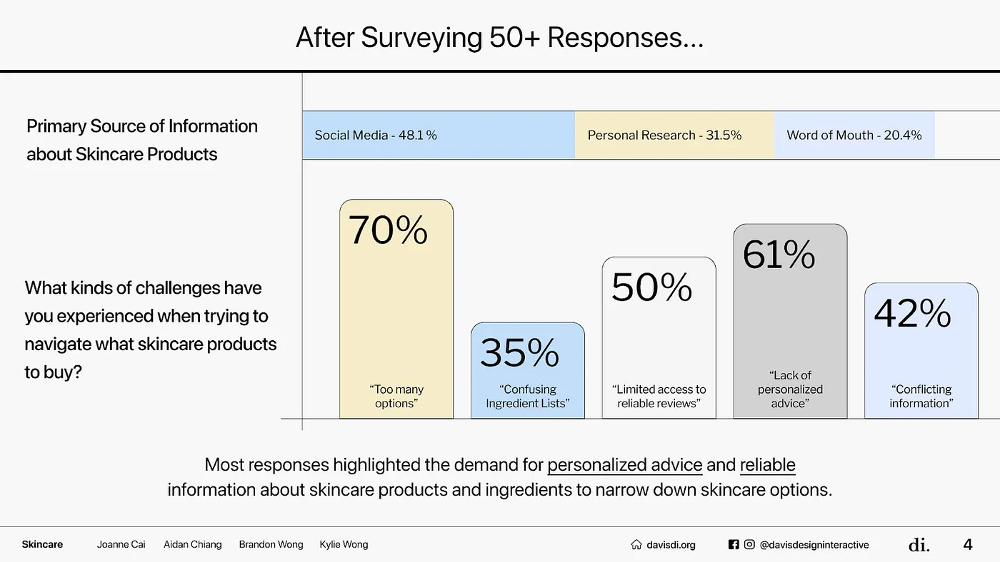Social media emerged as the primary source of skincare product information for most respondents, revealing how people are currently getting their skincare advice. Our research uncovered multiple challenges consumers encounter when purchasing skincare products, revealing a significant disconnect between available information and personalized skincare guidance. Some statistics are visible in the image provided.
Overall, most responses highlighted the demand for more personalized advice and consistent, reliable information about different products and ingredients.
Demographic Composition
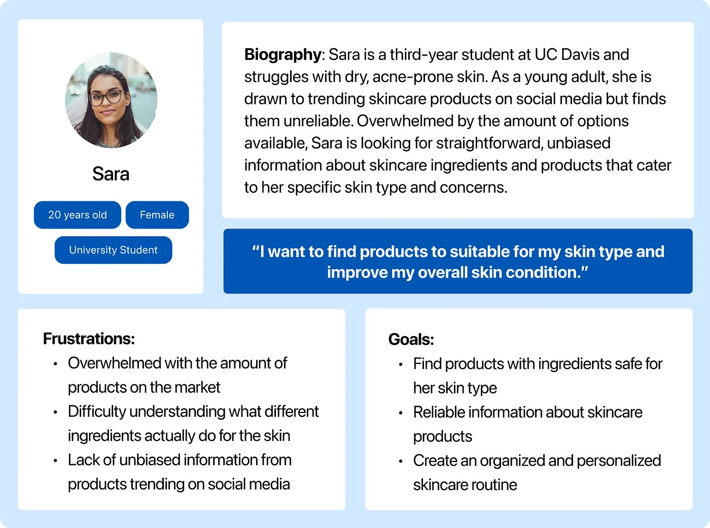Our research participants primarily represented young adult female college students. We translated these demographics into a user persona, providing clarity and insight into the specific information needs and challenges of this key target user.
Research Limitations and Future Improvements
Given additional time and resources, we would aim to expand our research methodology. This would mainly include incorporating participants from broader age groups and backgrounds, as we made the conscious decision to stick to a younger audience in the interest of our time constraints.
Ideation
Sketches
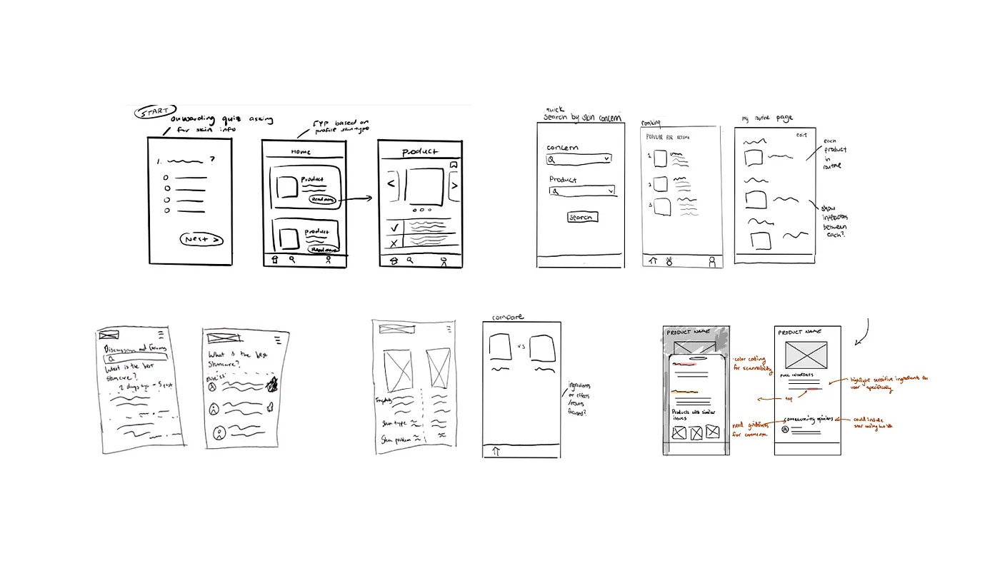Based on research findings, users are interested in understanding their skin type, discovering suitable products, accessing reliable information and building a personalized routine. To address these concerns, we created sketches of potential features such as a skin type quiz, color-coded ingredient breakdowns, filtered search, creating a routine, and community discussion forum. First, we finalized our decision to create an information, rather than commerce-based platform in order to provide the most unbiased information to users. We refined our list of features to include an onboarding skin type quiz, ingredient breakdown, explore and search page, homepage with recommendations and creating a routine. We chose to exclude the community forum feature because we felt it might conflict with the app’s goal of delivering unbiased and reliable information. Additionally, community forums can be challenging to moderate effectively, creating a risk of spreading misinformation or allowing biased content to influence users.
User Flow
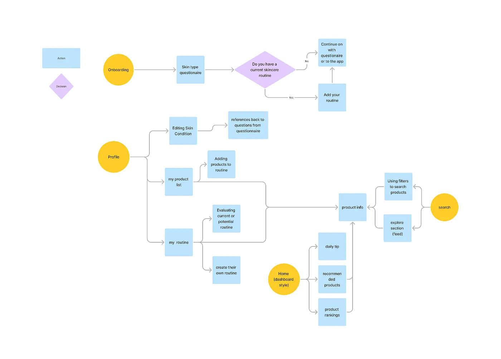With the findings from our surveys and user interviews, we used affinity-mapping to hone in on what aspects of skincare users are most concerned about. They find it difficult to access unbiased information about the effectiveness of products, as much of the available content is influenced by marketing or personal opinions. Additionally, ingredient lists are often written in complex, technical language that is not intuitive or easy to understand. The overwhelming number of skincare products on the market also complicates the process, making it hard for users to navigate their options. Many users struggle to identify products that are well-suited to their specific skin type and needs. Next, we developed a user-flow diagram to map out these key features.
The first is onboarding, beginning with a skin type quiz, providing information for product rankings and recommendations which will be listed on the user homepage. The product explore feature helps users find new products based on their skin concerns and ingredient compatibility. Routines allows users to create a personalized skincare routine, receive feedback on product interactions, and access simplified ingredient information. Lastly, the profile allows users to manage their skincare routines, save favorite products, and monitor their skin type and condition.
Problem Statement
How might we help users understand their own skin and make well-informed purchase decisions?
Mid-fi & Testing
After the ideation stage, we incorporated our sketches and user flow into wireframes. We made two main iterations during the mid-fidelity stage, by incorporating usability testing feedback after each iteration.
- Main Features
- We created an onboarding quiz to collect data from users' distinct skin type for personalized and recommendation features.
- Homepage
- By going back to research, many participants mentioned the convenience and their frequent usage of product rankings in their purchase decisions. Thus, we included a weekly-updated product ranking in our homepage. We also included daily skincare advice and product recommendations.
- Profile Page
- The profile page includes a routine list where users are able to create and customize their own routines, a bookmark feature where users are able to save undecided products to, a skin condition section where users are able to edit their skin concerns at any time, and a product compatibility page that alerts users if their routine contains incompatible products.
- Explore Page
- We included an explore section and a search feature for users to look up specific products. For the product information page, we included a review section and an ingredient list with categorized ingredients from good to poor based on the product’s compatibility with the user’s skin type.
For usability testing, we wanted to analyze user pain points and evaluate the effectiveness of our delivery of the personalized and educational aspect of skincare without overwhelming users. We conducted two rounds of usability testing with the same eight users, ranging from undergraduate college students, graduates, and working professionals, ages 19–25.
- Usability Testing Tasks
- Complete onboarding quiz
- View tips, product ranking, product recommendation on homepage
- Create a routine
- Edit profile page (edit “My Routines”, “Product List”, “Skin Condition”)
- View product compatibility
- Search up a product
Iteration 1
Onboarding:
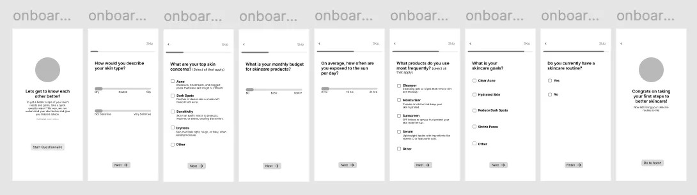Homepage:
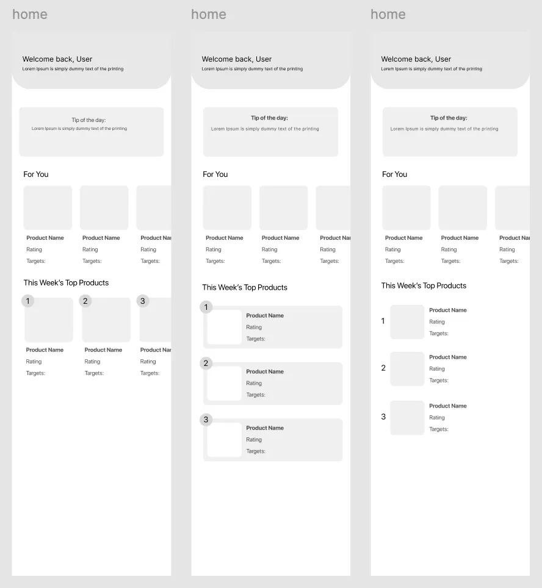Profile Page — Create a Routine:
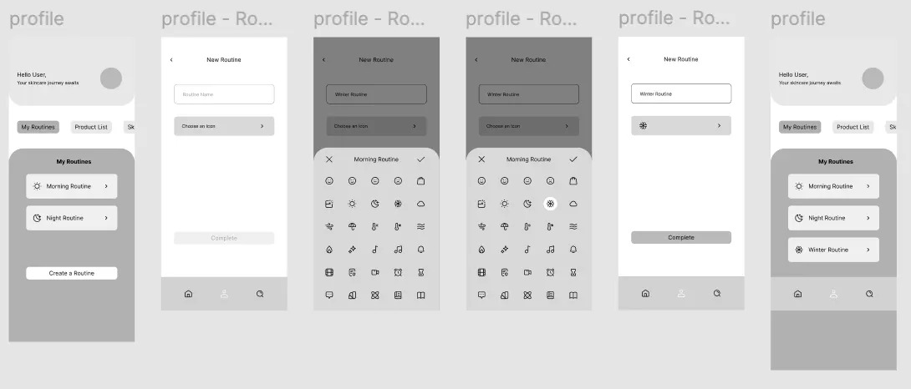Profile Page — Routine List, Bookmark, Skin Condition, Product Compatibility:
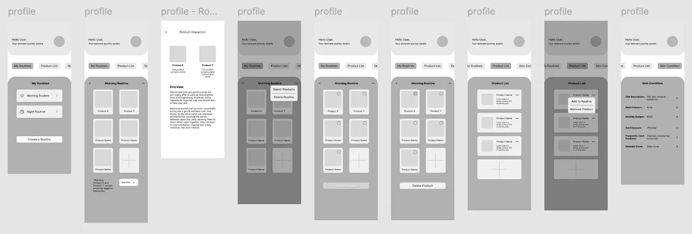Explore Page:
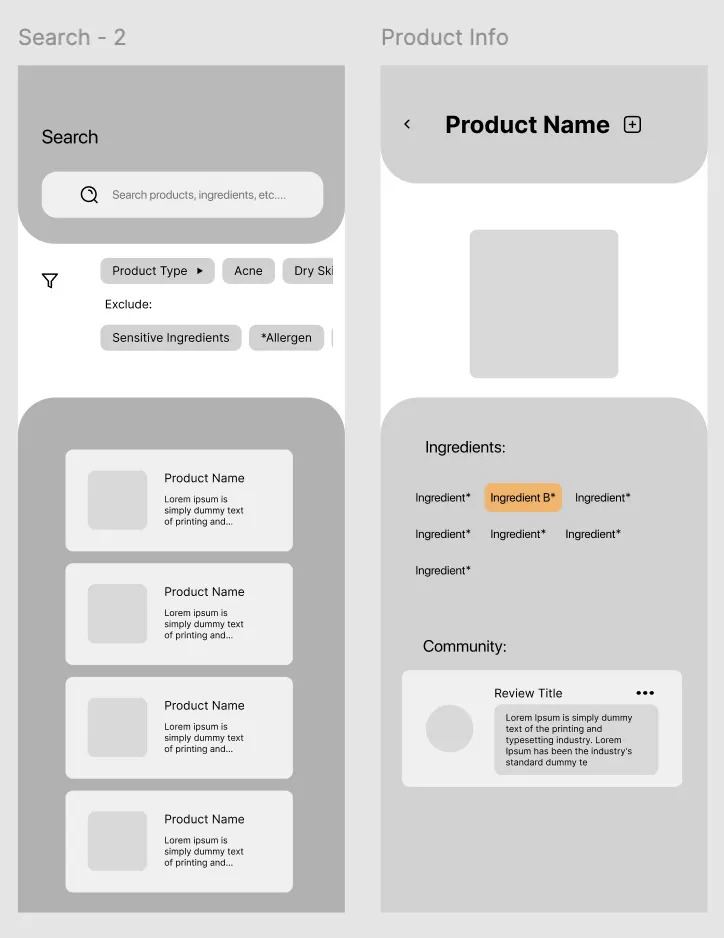Usability Testing Round 1
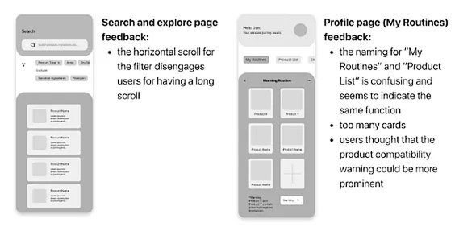 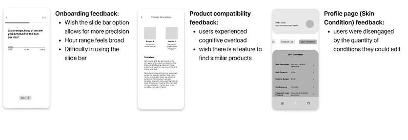Iteration 2
After synthesizing the feedback from the first round of usability testing, we incorporated feedback into our design and made major changes to enhance user experience. We explored alternative design systems and shifted towards a more minimalistic approach, aligning more closely to user preferences.
Onboarding:
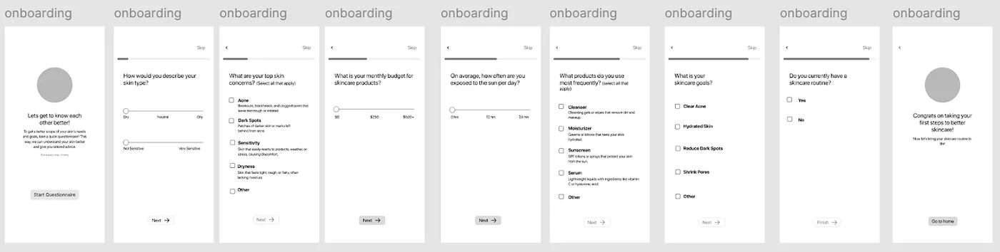Homepage:
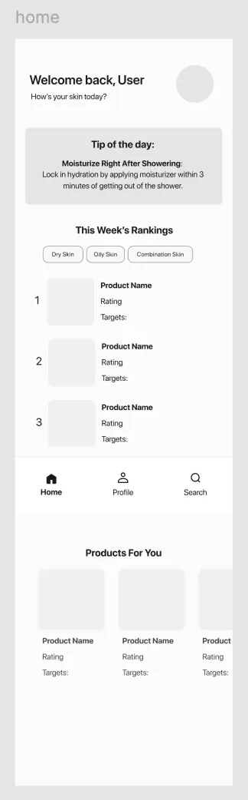Profile Page — Create a Routine:
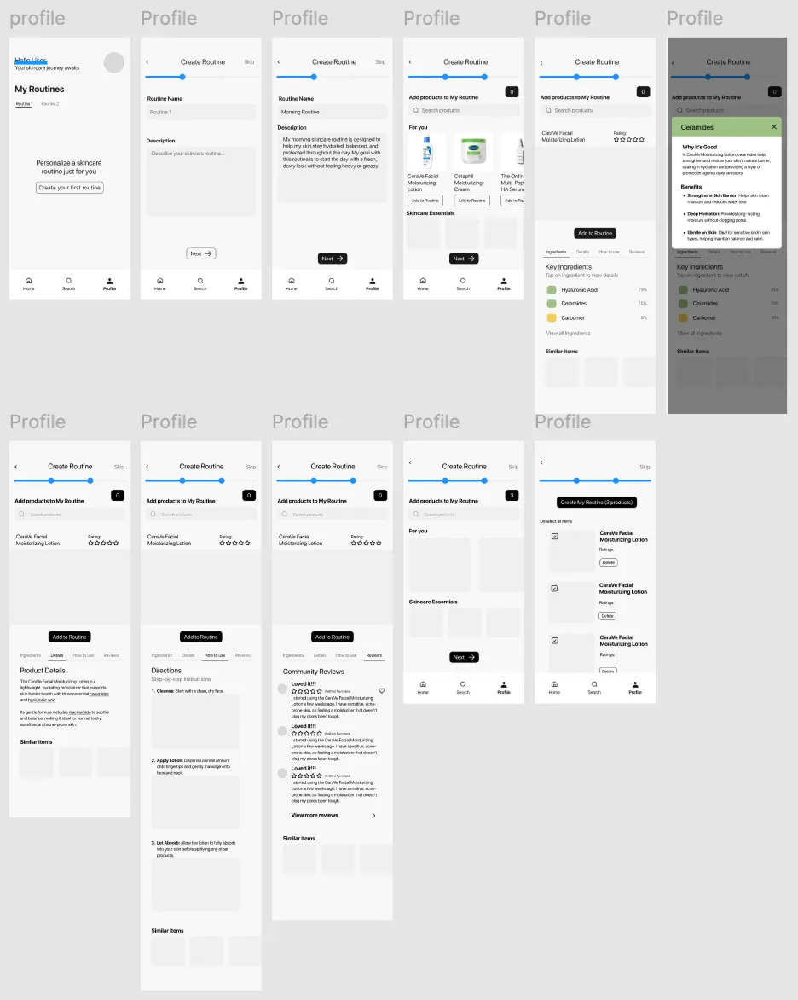Profile Page — Routine List, Bookmark, Skin Condition, Product Compatibility:
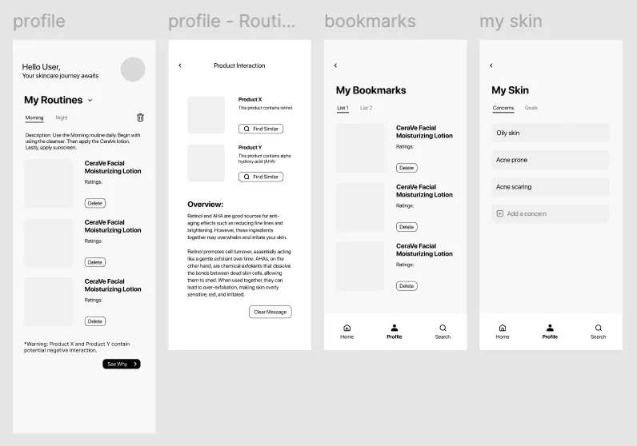Explore Page:
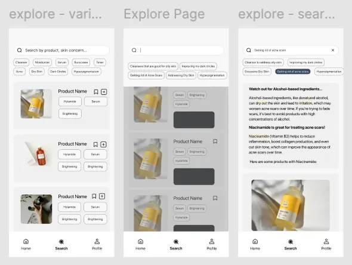Usability Testing Round 2
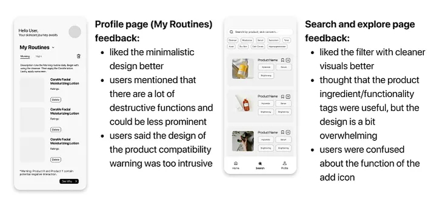 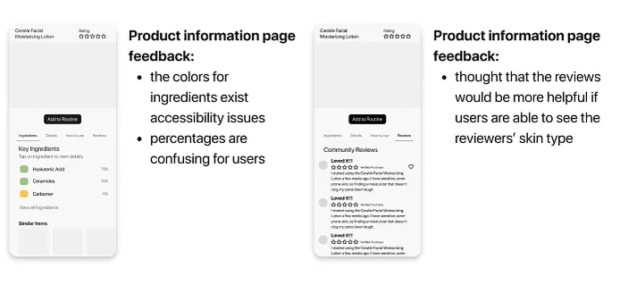A/B Testing
We conducted A/B testing to determine user preferences on the following visual designs and prototypes:
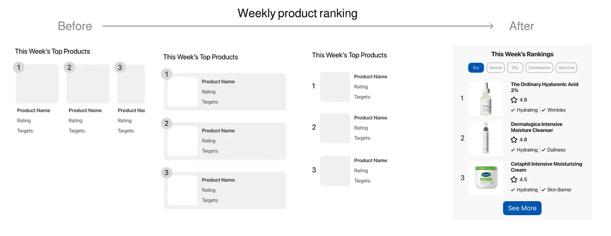For the weekly product ranking in the homepage, we tested the first three versions. Users favored Version C for its minimalistic design and straightforward information. We finalized with Version D by adding categories for different skin types.
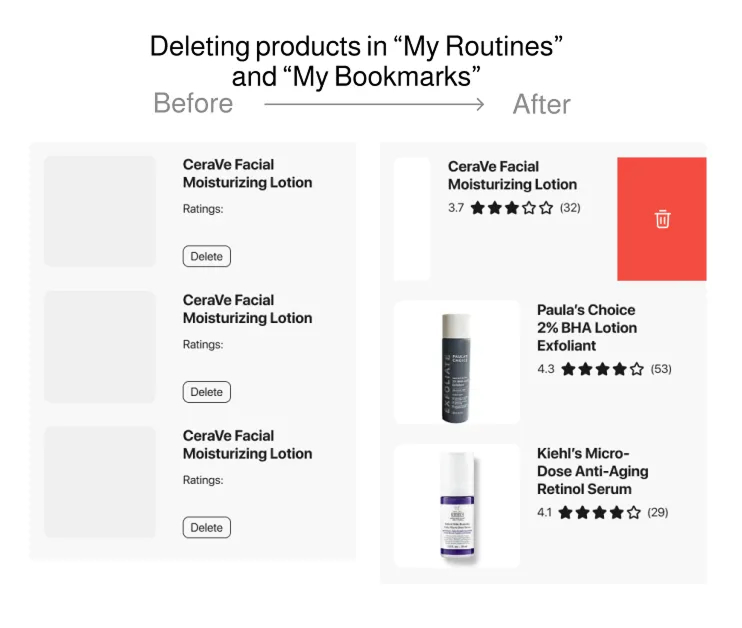For the deleting product prototype in “My Routines” and “My Bookmarks” under the profile page, users preferred the swipe-to-delete design in Version B for being more minimalistic since Version A consists of too many destructive buttons in one page.
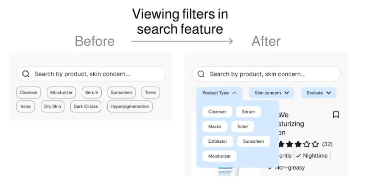For the search feature under the explore page, we wanted to enhance personalization by adding tags for products and skin types in the filter feature. Users picked version B for the cleaner UI with tags being categorized into drop-downs.
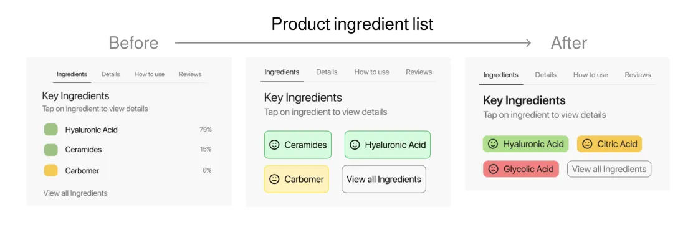For the product ingredient list under the product information page, we wanted to categorize ingredients as good, neutral, or poor based on the user’s skin type, with clickable ingredients that display a pop-up explanation. Our goal was to provide personalized and educational information for our users without being overwhelming. Users preferred Version B due to accessibility issues in Version A, but noted that the design in Version B felt cramped with excessive fills, strokes, and icons. We finalized with Version C by removing strokes, minimizing button paddings, and adjusting colors to pass the color contrast test.
Final Designs
- Onboarding:
- 7 onboarding questions to develop a better scope of user’s skin needs
- Personalized products recommendation that meet user expectations (ie. cost, address skin concerns, skin goals)
- Created a baseline skin profile, providing a better understanding skin needs/ skin concerns
- Homepage + Ranking:
- View skincare product ranking for various product types
- View skincare tips to optimize skin health
- Facilitate better understanding of the product through product taglines
- Creating New Routine:
- Create a routine name and description
- Select skincare products to add to routine
- View product’s key ingredients, details, how-to-use, and reviews.
- Edit Skin Profile:
- Easily edit skin type, condition, and concerns
- Add bookmarked products to routine
- Edit Routine + Product Compatibility:
- Users will be alerted if products within routine have a compatibility risk
- Alternative products that reduce risk will be suggested to user
- Delete product from routine or delete entire routine
- Explore Page:
- Explore new products in a feed based on the skin type saved in your profile
- Users can search for skincare products with options to filter by type of product, specific skin concerns, and exclude certain ingredients
- Search results will display information about ingredients, alongside recommended products
- Users can also use suggested search prompts
Presentation Day
On presentation day, our team of four delivered a ten-minute presentation to a panel of three judges: Cheryl Cai, Noelle Skransky, and Ken Skistmas. We walked them through our comprehensive design journey, sharing the insights and process behind Skinfo.
Noelle provided particularly valuable feedback. She praised our product compatibility feature and appreciated how we consistently grounded our design decisions in thorough research. The primary constructive criticism focused on our presentation approach — specifically, recommending that we separate our mid-fidelity iterations into individual slides to allow for more focused discussion of each design frame.
Challenges
Some challenges we faced included identifying a specific target audience to narrow the scope of a broad topic like skincare. For our design system, it took time to decide on colors and the general aesthetic for our app, along with keeping consistency of components across our pages. The last challenge was presenting educational and personalized content to the user without it being too overwhelming.
Next Steps
As for next steps, we want to explore an in-app skin scanner to automatically observe skin type and condition, as well as other features mentioned during our user interview process, like incorporating a Q&A feature and expanding upon our community review system to make them more insightful and trustworthy.